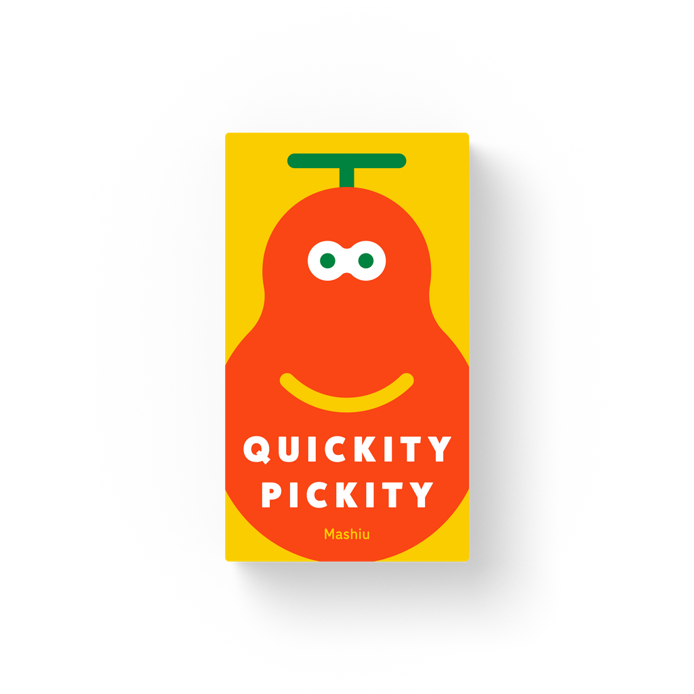
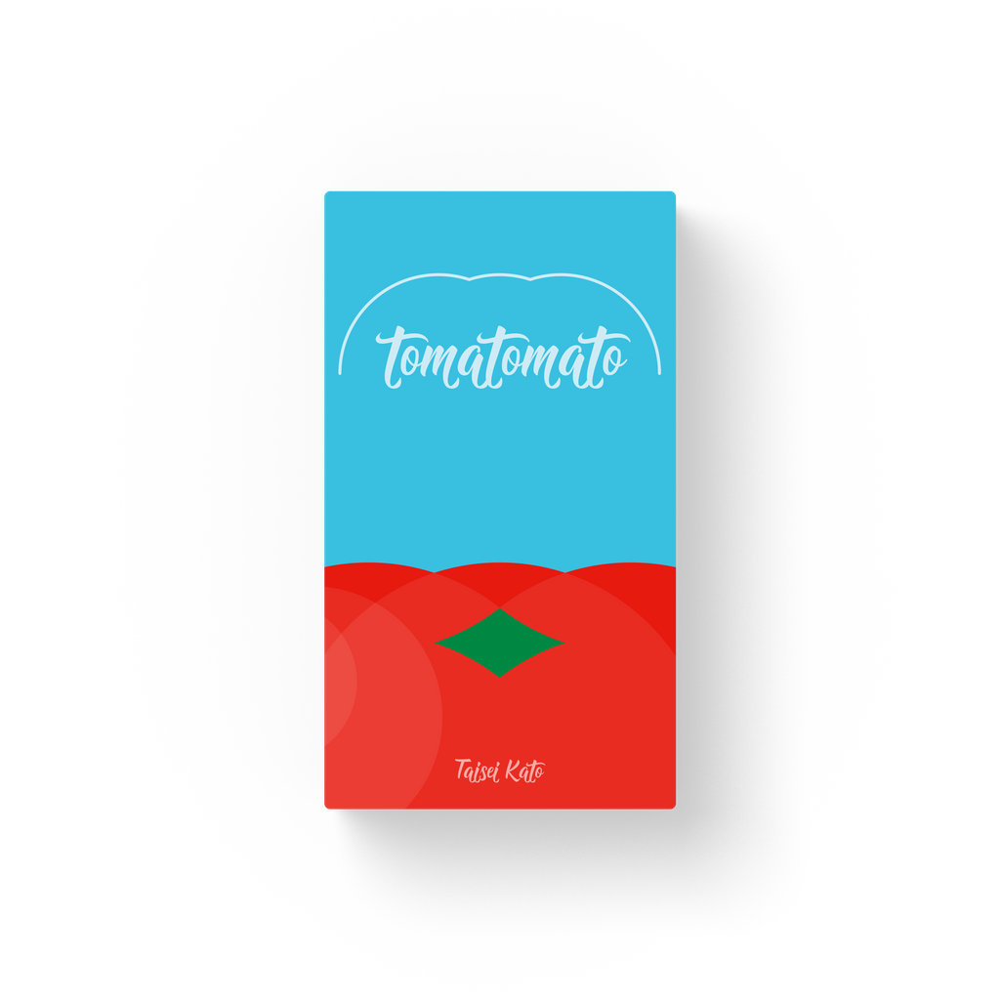
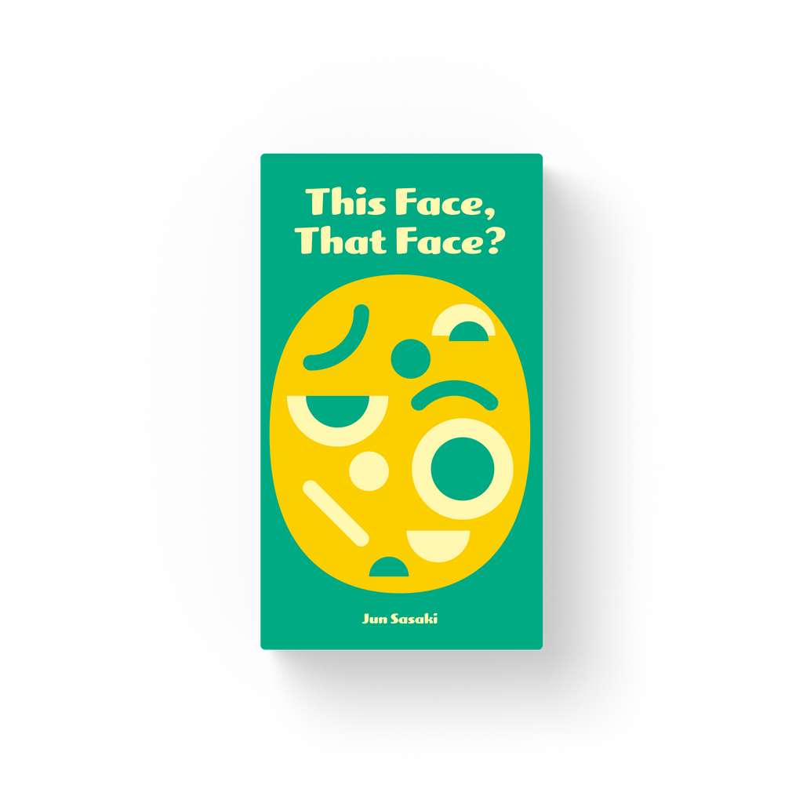
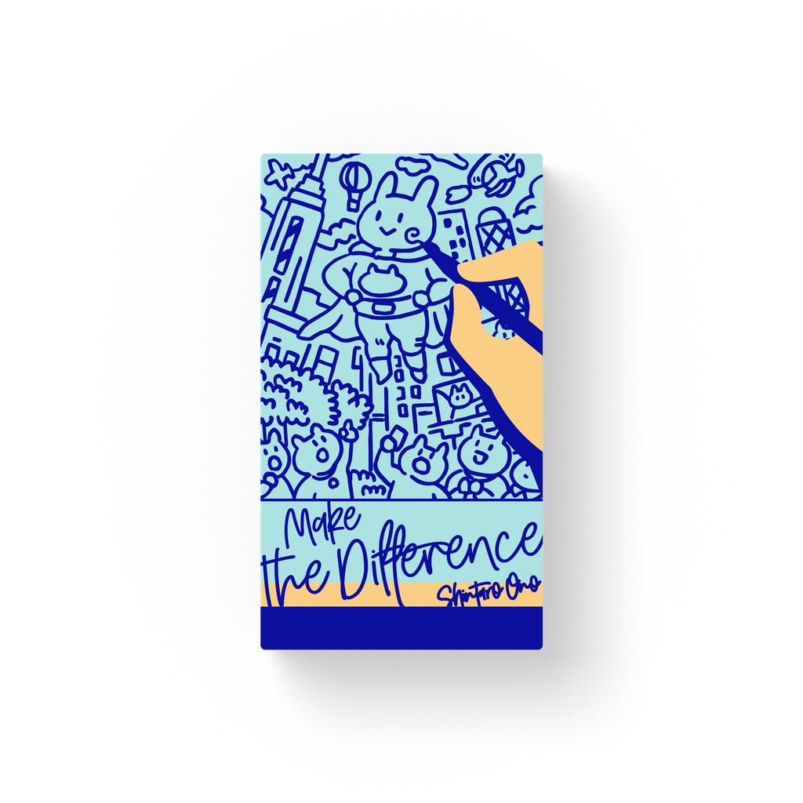
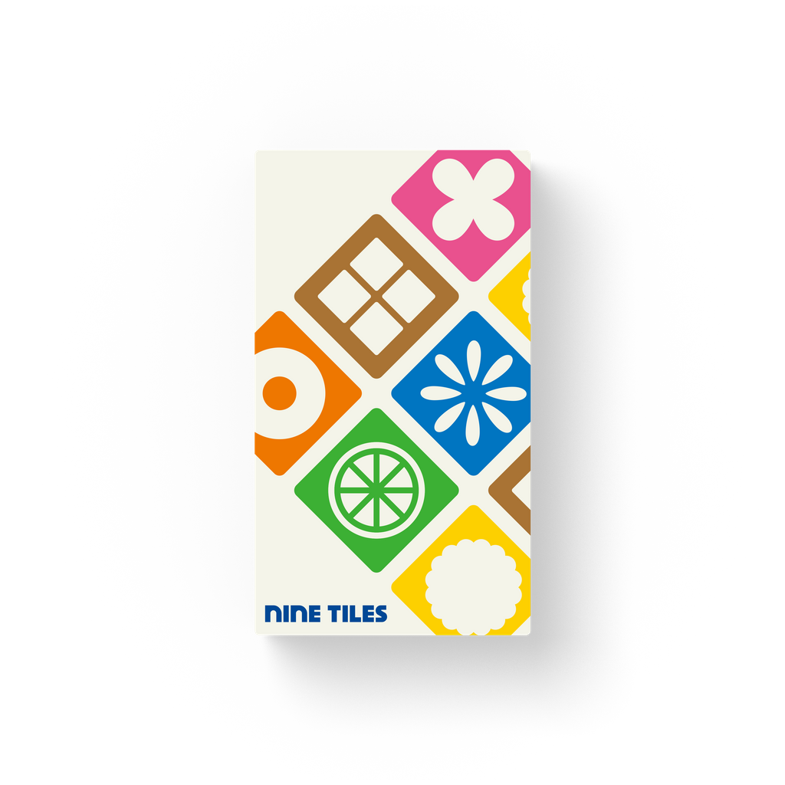
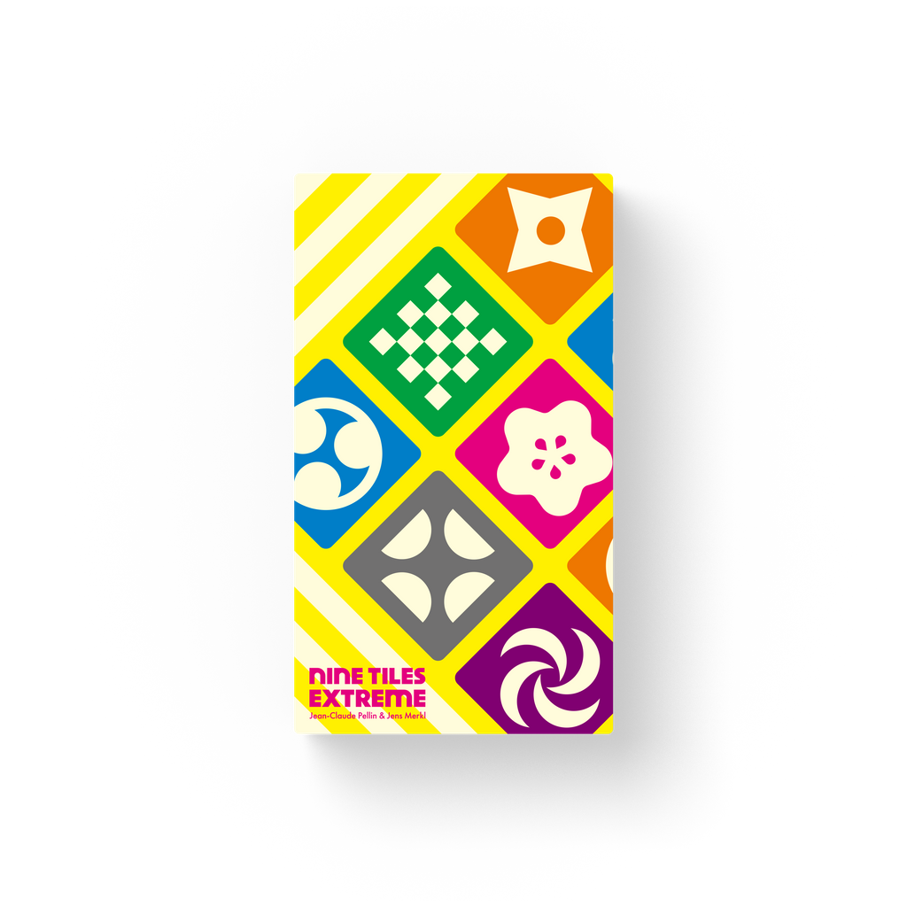
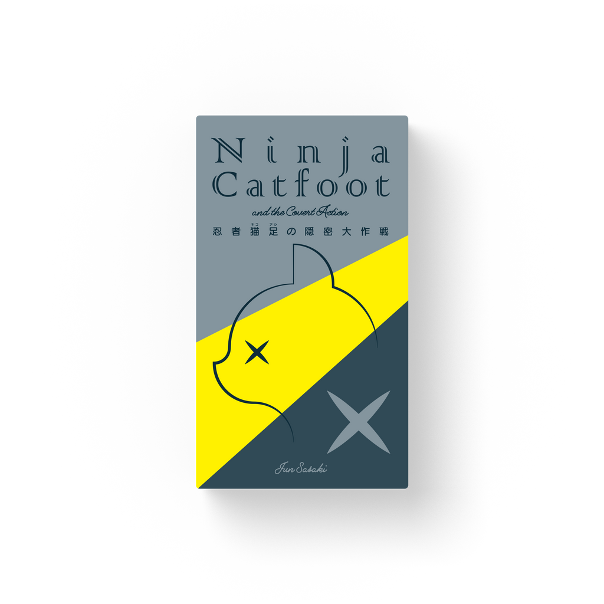

这七款游戏的核心全都是“在压力下快速做出正确反应”——手速、观察力、舌头灵活度，分别被推到极致。它们是 Oink 体系里最“不像传统桌游”的一类，但恰恰是派对和暖场场景的绝对主力。

人数：2–5 | 时长：20min | 年龄：6+
核心机制：水果板块面朝下散在桌面。所有人同时用一只手翻板块，看到想要的水果就抓到自己面前。目标是将水果按“相同表情 + 相同颜色”或“相同表情 + 相同形状”组成套装。但每轮的计分卡规则各不相同——有时大套装加分、有时反而扣分。三只猴子板块被翻出时本轮立即结束。最先赢得 3 张计分卡者获胜。

人数：3–8 | 时长：15min | 年龄：6+
核心机制：卡牌上印着“To（番茄）”、“Ma（马托）”、“To（土豆）”等音近字。玩家轮流翻牌并大声念出，后面的人必须把前面所有的连起来念。牌越翻越多，舌头越来越打结，全场笑到崩溃。谁念错或卡住就吃惩罚。

人数：3–8 | 时长：15min | 年龄：8+
核心机制：一位玩家用极其有限的配件（几种眼睛、嘴型等）在面板上拼出一个表情。其他玩家从手牌中挑选最匹配这个表情的台词卡（比如“我昨天又忘了带钥匙”、“好像中奖了”之类无厘头台词）。拼脸的人选出他觉得最配的那张台词——选中的玩家得分。但你不能拼得太精准（那样所有人都选同一张），也不能太抽象（那样没人选得中）。

人数：3–6 | 时长：20min | 年龄：8+
核心机制：每个人拿到一张精美插画卡，你的任务是用特制画笔在卡上添加几笔来制造“不同点”。然后把自己的卡和一张原版卡一起传给别人，别人在限时内找茬。画得太明显→太容易找→不得分。画得太隐蔽→没人找到→也不得分。找茬者找到越多不同点得分越高。

设计师：Jean-Claude Pellin | 人数：2–4 | 时长：15min | 年龄：6+
核心机制：Meow Tiles 的原型（详见第二课）。每位玩家 9 块双面不同图案的砖，翻题目卡后所有人同时竞速排列 3×3 来匹配目标。在日本累计销量超 30 万套。原版的图案是抽象几何（圆点、方块、条纹等），比猫版更抽象但逻辑一样。

人数：2–4 | 时长：15min | 年龄：8+
核心机制：在原版九砖基础上加入了干扰规则——题目卡可能写的是“按颜色匹配形状”或“按形状匹配颜色”，让你的大脑在两种规则之间来回切换。刚刚习惯了一种排列逻辑，下一轮又换另一种。对大脑处理速度的要求比原版高一个档次。

人数：3–6 | 时长：15min | 年龄：8+ | 已绝版，终极收藏品
核心机制：Oink 最早期、最稀有的作品之一。玩家扮演忍者猫，必须在极其严格的物理限制下（比如只能用特定手指、不能发出声音、在特定节奏下行动）去抢夺或翻转场上的道具。结合了动作、潜行和反应的元素，是 Oink 难得一见的“体感”游戏。
| Quickity Pickity | tomatomato | Mr. Face | Make the Diff | Nine Tiles | Nine Tiles EX | Ninja Catfoot | |
|---|---|---|---|---|---|---|---|
| 考验 | 手速+观察 | 舌头 | 创意表达 | 创作+观察 | 空间+手速 | 脑力切换 | 身体控制 |
| 即时制 | 是 | 回合制 | 回合制 | 限时 | 是 | 是 | 是 |
| 吵闹度 | 高 | 极高 | 中 | 低 | 中 | 中 | 高 |
| 最佳人数 | 3-5 | 4-6 | 4-6 | 3-4 | 2-4 | 2-4 | 3-6 |
| 可购性 | 是 | 是 | 是 | 是 | 是 | 是 | 绝版 |